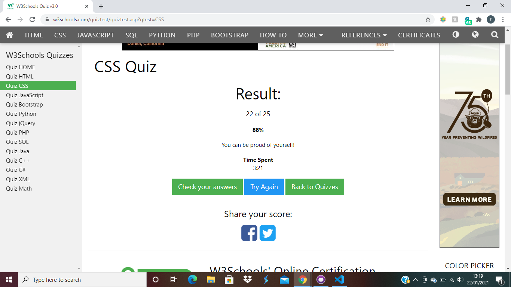

18/01/2021
CPD activity: HTML and CSS
What have I learnt?
I learned about the distinction between HTML and CSS, and how they are used to create a webpage
I learned basic HTML tags: p, h1-6, em, strong.
I learned how to create links with anchor tags, using title and target attributes.
How did I use this in practice?
I completed tasks using the different HTML tags to give structure to the content of a web page.
I created links with absolute paths to open an external website and links to open an email.
19/01/2021
CPD activity: HTML and CSS
What have I learnt?
I learned about images, lists and tables in HTML.
I learned about the different ways to connect CSS to HTML and about CSS syntax (e.g. declartion, property, value, selector, inline, embedded, external)
I learned about the different between block and inline elements.
How did I use this in practice?
I completed tasks adding images and lists to a web page.
I added colour to a page background by connecting an external CSS page to an HMTL document.
W3 HTML Quiz

Quiz question topics I was unsure of:
- iframe
- SVG elements
- Inserting movie and audio files
- contenteditable attribute
- onblur/onfocus
- canvas element
- Slider control
- aside element
20/01/2021
CPD activity: HTML and CSS
What have I learnt?
I learned different CSS style declarations, such as color, background color, border and font(style, weight, family, size).
I learned about id and class attributes, as well as how the browser reads CSS styles in terms of priority.
I learned how articles can be used to separate content on a page, as well as tags such as main, header, footer, aside, nav and section.
How did I use this in practice?
I completed tasks adding styles to web pages, including using id and class attributes and nested selectors.
I completed a task articleiding web page content using article.
21/01/2021
CPD activity: HTML and CSS
What have I learnt?
I learned to use span and mark to style HTML inline.
I learned about using pseudo-classes for anchor links.
I learned The Box Model- understanding the relationship between content, padding, border and margin, and their properties top, right, bottom, left.
I learned about the positioning property with values fixed, relative and absolute.
How did I use this in practice?
I completed tasks adding styles to web pages, including using span and mark and pseudo classes.
I completed tasks editing web page layouts by changing values for padding, margin and border, and giving elements position values.
22/01/2021
CPD activity: HTML and CSS
What have I learnt?
I learned about poitioning elements with CSS, including float and clear.
I learned about some available Frameworks such as Bootstrap and Tailwind used to help with development.
How did I use this in practice?
I did tasks using the position property and float property to move elements around a page.
I added CSS to format my CPD reflections, including CSS variables and 'sticky' position for the header.
W3 CSS Quiz

Questions I was unsure of:
- List Styles
- Text transform
25/01/2021
CPD activity: Introduction to Javascript
What have I learnt?
I learned alert, console.log and document.write as methods to output data with Javascript.
I learned about naming and defining variables using var and arithmatic operators (+-/*%).
I learned about some different types of data: strings of characters, numbers, boolean, undefined, null value.
How did I use this in practice?
I used arithmatic operators and variables and concatonated different data types.
I outputted variables to the console, alert box and document.
26/01/2021
CPD activity: Introduction to Javascript
What have I learnt?
I learned about declaring and invoking functions in Javascript.
I learned about truthy/falsy and boolean values, and global/local variable scope.
I learned about using if, else and if else, as well as comparison operators.
How did I use this in practice?
I created variables with functions and outputted these to console.log/document.write and alert.
I created an if else logical function to have different statements appear in the console log depending on the 'tempurature' value e.g. if the tempurature is less than 0 the console log states 'You should stay inside'.
27/01/2021
CPD activity: Introduction to Javascript
What have I learnt?
I learned about logic operators &&, || and !.
I learned about using Switch statements.
How did I use this in practice?
I created a switch statement calculator that executed different functions depending on the arithmatic operator and 2 numbers inputted, and a switch statement that outputted a drink order depending on the drink type and size.